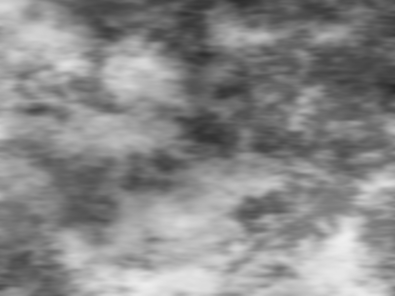
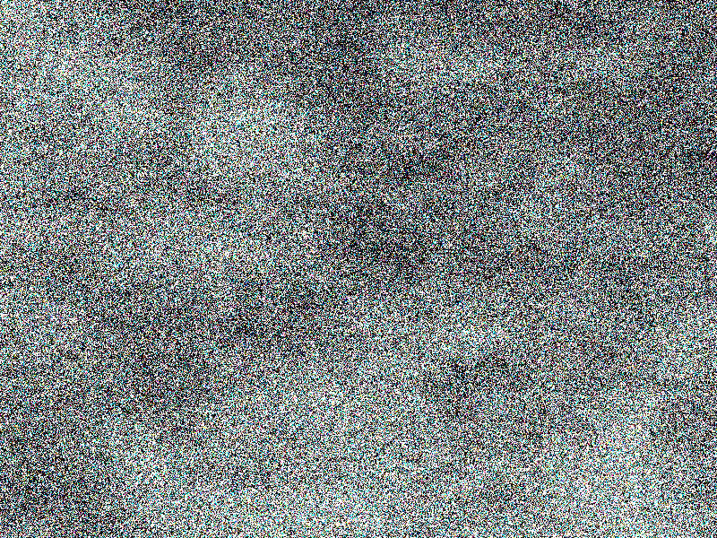

SDL 2 Examples
The collection of small examples written in C++ and using SDL 2.
No executable files are provided for now, but it is possible to build these examples using
CMake from sources.
These examples were tested on Windows (Windows 11 21H2), macOS (macOS High Sierra 10.13.6) and Linux (Ubuntu 22.04 LTS, Fedora Linux 36) desktop operating systems.
Links for downloading SDL 2 libs: SDL 2, SDL 2 Image, SDL 2 TTF.
Notes for building on Windows:
- You may need to add sdl2-config.cmake to your directory with SDL 2 library to build the examples.
- CMake assumes existence of the following paths:
..\Libs\SDL2-2.0.22 ..\Libs\SDL2_image-2.0.5 ..\Libs\SDL2_ttf-2.0.18(related to a project directory withCMakeLists.txt). - Run one of
*.batfiles fromScriptsdirectory to generate a Visual Studio 2019 or 2022 project (inBuilddirectory).
Notes for building on macOS:
-
Installing CMake, GCC and SDL 2 dev libs using
brewon macOS (but installing may be slow!):
brew update
brew install cmake
brew install SDL2
brew install SDL2_image
brew install SDL2_ttf
Clang is a default compiler for macOS and it should work for the examples fine.
However, one can install/use GCC as well:brew install gcc(but installing GCC usingbrewmay be very slow!). - Run
*.shfile fromScriptsdirectory to generate a Unix make project (inBuilddirectory). - Alternatively, one may want to generate a Xcode project using CMake, but in this case some extra work/setup with CMake required.
Notes for building on Linux:
-
Installing CMake, GCC and SDL 2 dev libs using
apt-geton Debian and Debian-based distros (Ubuntu, Linux Mint, etc.):
sudo apt-get update
sudo apt-get install cmake
sudo apt-get install build-essential
sudo apt-get install libsdl2-dev
sudo apt-get install libsdl2-image-dev
sudo apt-get install libsdl2-ttf-dev -
Installing CMake, GCC and SDL 2 dev libs using
dnfon Fedora Linux, CentOS, Red Hat Enterprise Linux:
sudo dnf install cmake
sudo dnf groupinstall "Development Tools" "Development Libraries"
sudo dnf install SDL2-devel
sudo dnf install SDL2_image-devel
sudo dnf install SDL2_ttf-devel
You may trysudo dnf groupinstall @development-tools @development-librariesfor older versions of Fedora Linux. - Run
*.shfile fromScriptsdirectory to generate a Unix make project (inBuilddirectory).
Image BMP
Image PNG
Text TTF